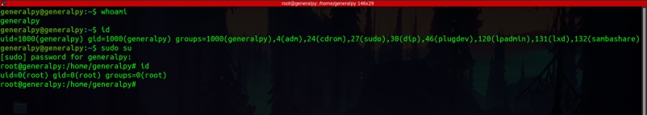
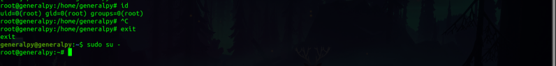
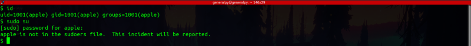
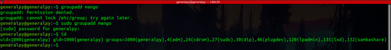
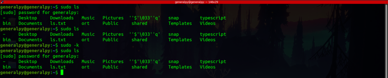
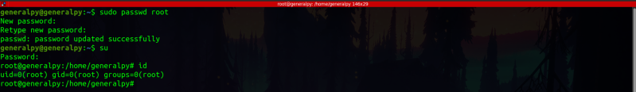

There are 2 types of users in Linux(according to privileges) :-
1. non-root User : These user have a limited number of permissions which are only applied to their own domain(folders and configs own by that user). Admin tasks , tasks like installing new software for whole pc, creating or deleting users etc are not available to this type of user.
2. root User : Root user is like god user. It can change anything and access anything present on the OS.
Since root user is very powerful linux usually don't allow to login to root. Even a single spelling mistake can result in destruction of PC.
But some tasks like installing software, creating and deleting groups etc. need root privileges. root privileges can be accessed in many ways some of which are listed below :
sudo su Command :- sudo su command can be used to spawn a root user terminal for that current session. Note that if terminal is closed, everything will revert back to the user currently logged in. When you enter sudo su, terminal asks for password of current user(not root). If password is entered correctly and that user is in a group called sudo on Ubuntu or wheel in CentOS then root shell is granted.

Notice in image above how user was generalpy first and root after running sudo su command. Also note that generalpy is in sudo group as shown in output for id in generalpy's terminal( 27(sudo)).
To exit root shell you can type exit. To activate root shell(if it was activated in current shell previously) type sudo su - .

This is what happens when user other than that of sudo groups tries to access root terminal.

Add sudo before command : This method is generally used by people. Just add sudo before each command you want to run with root. Shell will ask for user's passwd and then if user is in sudo grp(sudoers file to be precise) root privileges will be granted for that command.
groupadd is a command which needs root privileges to execute(this command creates new groups), here is an example of using groupadd without sudo and with sudo. Note that the user is still generalpy

The sudo policy caches the user's credentials for 5 minutes after using to sudo command. That means if you use sudo and enter your password, for next 5 minutes you don't need to enter your password if you use sudo till next 5 minutes. When you run sudo again within 5 minutes of last sudo, timestamp on your credentials is automatically updated.
You can update timestamp on credentials using sudo -v command. You can also erase/invalidate credentials by using sudo -k .
Note how password is not required when sudo is used for second time and it is required after using sudo -k command.

Temporarily becoming root by using su : We can temporarily become root by using su and entering root user password. This method is not available in many linux distros by default(in ubuntu not available but available in centos). In Ubuntu, during installation you do not add root password. Hence you cannot log into root account by any way. Note that not having password don't mean that you can log into root without any password by simply pressing enter, not having password means that you cannot log in at all.
To set linux password, passwd command is used. Once we set password we can log into root by using su and entering password. Note that this method can only be used in terminal, you are still non root user in gui and you cannot log in as root in gui.
Setting password of root and getting temporary root access.

This method is different from method 1 as in method 1 only users in sudoers file can gain root terminal but by using this method anyone can get root terminal(offc they need root password). Also password asked in method 1 is for currently logged in user and password asked in this method is for root user.
Word root is used for many things in linux terminal. For example root is the base directory for whole linux file system which is located at / and there is a directory /root which is home directory of root user. Please note that root directory(/) and /root directories are different.